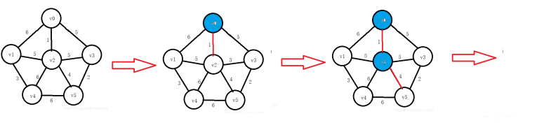
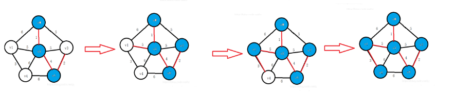

最小生成树
最小生成树
问题描述
给出一个有$n$个节点，$m$条边的无向图，从中选取边权之和最小(大)的$n-1$条边，使得图上任意两个顶点有且只有唯一的一条路径可以互相到达。
例子


如上图，其最小生成树为： 红色部分 和 
注意 最小生成树可能不唯一(边权相等)
暴力
枚举每一种可能的情况，计算最小值(因复杂度过高，不再赘述)。
Prim算法
时间复杂度：$O(nm)\sim O(m\log{n})$ 数据结构优化
以点为核心，每次选择当前已选中的点连接未选中的点的边中权值最小的一个，将这个点加入已选中的点集，并用和这个点连接的边更新未选中的点的距离。
例子
 盗图很开心
洛谷P3366 其实就是板子
#include <cstdio>
const int maxe = 6000; //n的最大值
int n, m, head[maxe], cnt;
//n个点,m条边,head[i]表示已i为端点最后读入的一条边的编号,已经读入cnt条边
bool vis[maxe]; //vis[i]标记i节点是否在最小生成树点集中
struct node
{
int value, last, sign; //value表示边权,last表示同一起点的上一条读入的边的编号,sign表示当前节点编号
} edge[400009];
//m最大值*2
inline void add_edge(int start, int end, int value) //链式前向星
{
edge[++cnt].value = value;
edge[cnt].sign = end;
edge[cnt].last = head[start];
head[start] = cnt;
return;
}
inline int prim()
{
int dis[maxe], ans = -1e9;
//dis[i]表示连接未加入点集的i号节点和点集中任意点最短路径长,ans = -1e9抵消选择第一个点溢出
for (int i = 1; i <= n; i++)
{
dis[i] = 2e9; //初始化dis数组
}
int k = 1, min; //k记录所选择的点的编号,min记录最小值,k初始值为第一个加入点集的点的编号
vis[1] = 1; //将第一个点加入点集
for (int i = 0; i < n; i++) //循环n次,将所有点加入点集
{
min = 1e9; //别忘了qwq,注意小于dis初始者,判断是否无法建树
for (int j = 1; j <= n; j++) //暴力搜索最小点,可用堆/平衡树(优先队列、set等)优化
{
if (!vis[j] && dis[j] < min)
{
min = dis[j];
k = j;
}
}
if (min == 1e9 && k != 1) //除第一个点外,如果没有未加入点集的点有连接且点集中小于n个点,证明有点无法连同
{
return 0;
}
ans += min;
vis[k] = 1;
for (int i = head[k]; i; i = edge[i].last) //用新加入的点更新dis数组
{
if (!vis[edge[i].sign] && dis[edge[i].sign] > edge[i].value)
{
dis[edge[i].sign] = edge[i].value;
}
}
}
return ans;
}
int main()
{
scanf("%d%d", &n, &m);
for (int i = 0; i < m; i++)
{
int a, b, value;
scanf("%d%d%d", &a, &b, &value);
add_edge(a, b, value); //无向边,任意端点可作为起止点
add_edge(b, a, value);
}
int ans = prim();
if (ans)
printf("%d", ans);
else
printf("orz");//无法连同所有点
return 0;
}
Kruskal算法
时间复杂度： $O(m\log{m})$
想法比较简单、易懂。
将所有边按权值从小到大排序，优先选取权值较小的边，判断两个端点是否在同一个集合中。如果在同一集合中，则跳过这条边，遍历下一条；如果不再同一集合中，则将ans加上边权并将两个点所在的集合合并。
涉及到判断两个点是否在同一集合中，需要引入并查集。
洛谷P3366 其实就是板子
#include <cstdio>
#include <algorithm>
int n, m, fa[6000], ans, cnt; //n个节点,m条边,已经选择cnt条边
struct edge
{
int a, b, value;
} edges[200009]; //有一条端点是a和b,权重为value的边
inline bool cmp(edge a, edge b) //比较函数
{
return a.value < b.value;
}
inline int find(int x) //并查集
{
return fa[x] == x ? x : fa[x] = find(fa[x]);
}
inline void together(int x, int y)
{
x = find(x);
y = find(y);
fa[x] = y;
}
int main()
{
scanf("%d%d", &n, &m);
for (int i = 1; i <= n; i++)
{
fa[i] = i;
}
for (int i = 0; i < m; i++)
{
scanf("%d%d%d", &edges[i].a, &edges[i].b, &edges[i].value);
}
std::sort(edges, edges + m, cmp); //按边权排序
for (int i = 0; i < m; i++)
{
if (find(edges[i].a) != find(edges[i].b)) //如果两个端点不再同一集合
{
ans += edges[i].value; //选中这条边
cnt++;
together(edges[i].a, edges[i].b); //合并两个集合
}
if (cnt == n) //最小生成树边数等于总节点数-1
break;
}
if (cnt == n - 1) //最小生成树边数等于总节点数-1
printf("%d", ans);
else
printf("orz");
return 0;
}
总结
两种算法均用到贪心的思想。
Prim侧重于点，适合稠密图；Kruskal侧重于边，适合稀疏图；但二者优化后差距并不大，推荐Kruskal，易理解不费手还不容易出奇奇怪怪的问题。(复杂度中可以看出)